Lab 1: VPC & Subnet Configuration
- Introduction
- Blueprint
- VPC Configuration
- Subnet Configuration
- Internet Gateway
- NAT Gateway
- Route Table Configuration
Introduction
In this lab, we will configure a VPC network hosting public and private subnet on different availability zones. Enable access to the internet for subnets via route tables and aws gateway resources
Blueprint
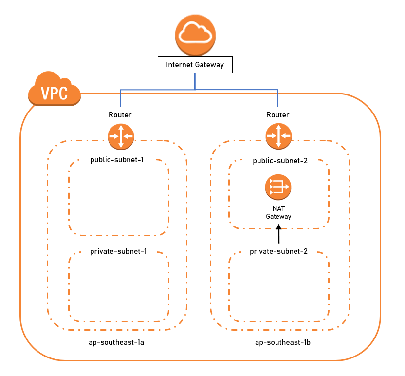
VPC Configuration
1) In VPC service page, navigate to Your VPCs page and click on Create VPC
2) Tag VPC resource with a name 3-tier-vpc
3) set IPv4 CIDR block IP to 10.0.0.0/16
4) Click Create VPC
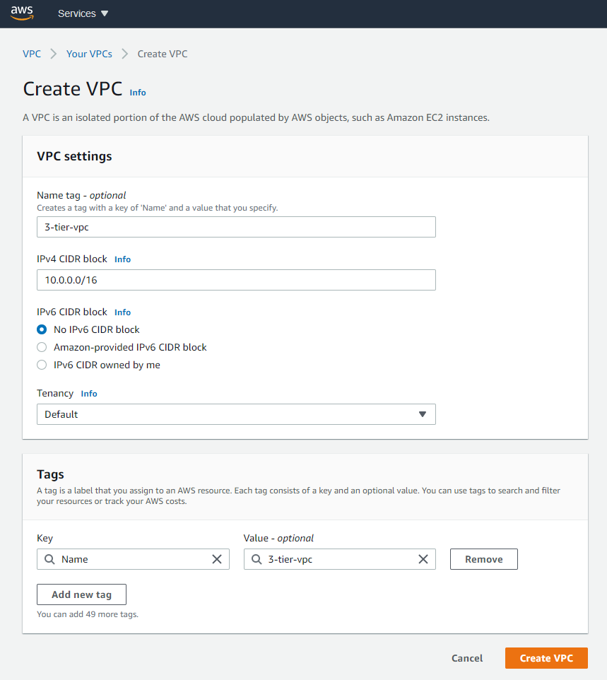
DNS Hostname assignment
By enabling DNS Hostnames, EC2 Instances created with public IP within this VPC will automatically be assigned a hostname.
5) Right click the created VPC, Click on Edit DNS Hostnames
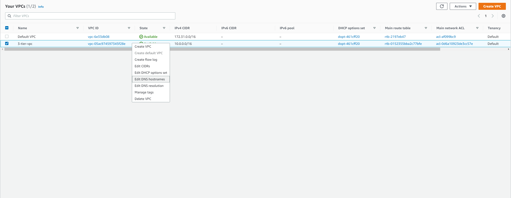
6) Click Enable Checkbox and save the changes.
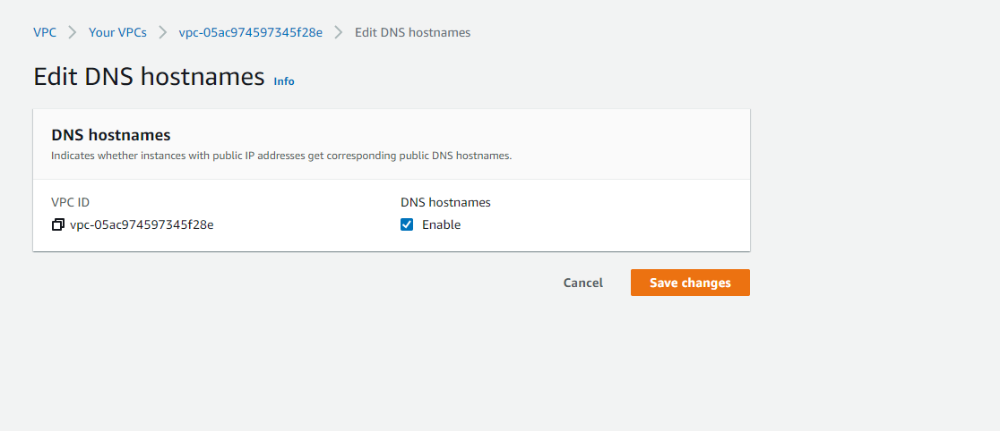
7) Enable DNS Hostname assignment for both PUBLIC subnets
Subnet Configuration
Create subnets to segregate resources into public and private zones. Subnets will be created in two different availability zones for high availability.
| Name Tag | IPv4 CIDR | Availability Zone |
|---|---|---|
| private-subnet-1 | 10.0.0.0/24 | ap-southeast-1a |
| private-subnet-2 | 10.0.1.0/24 | ap-southeast-1b |
| public-subnet-1 | 10.0.2.0/24 | ap-southeast-1a |
| public-subnet-2 | 10.0.3.0/24 | ap-southeast-1b |
1) In VPC service page, navigate to Subnets page and click on Create subnet
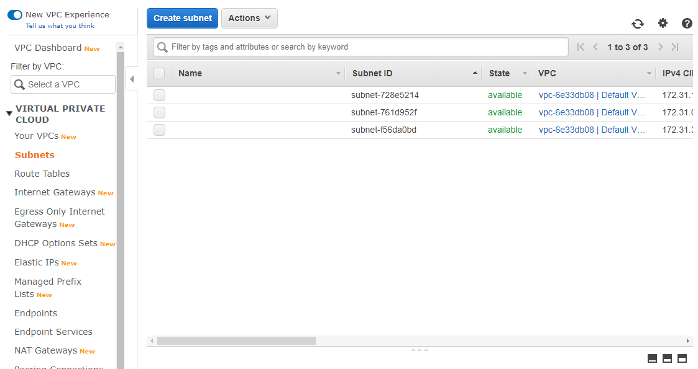
2) Tag Subnet with a name: private-subnet-1
3) Select VPC: 3-tier-vpc
4) Select Availability Zone ap-southeast-1a
5) set IPv4 CIDR block IP to 10.0.0.0/24
6) Click Create
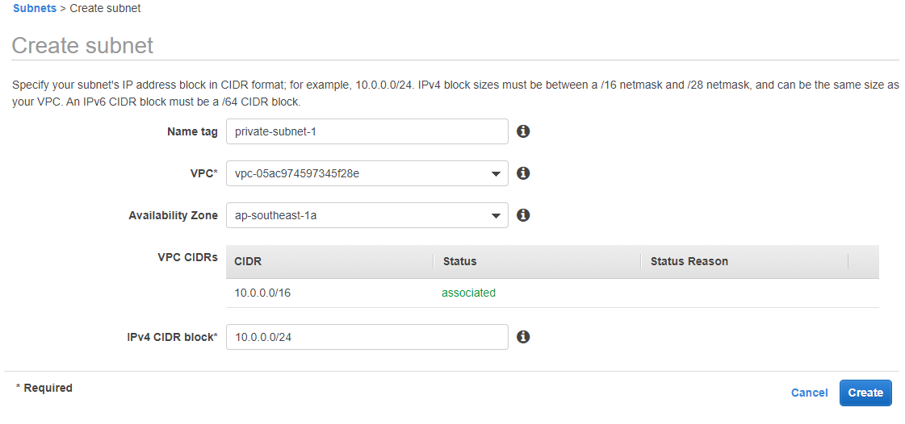
7) Create the other three subnets
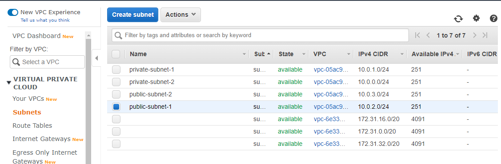
Reserved Addresses for Subnets:
- 10.0.0.0 Network Address
- 10.0.0.1 Reserved by AWS for the VPC router
- 10.0.0.2 Reserved by AWS
- 10.0.0.3: Reserved by AWS for future use
- 10.0.0.255: Network broadcast address, but not supported by AWS in a VPC
Internet Gateway
Internet Gateway allows internet access to your VPC
1) In VPC service page, navigate to Internet Gateways page and click on Create internet gateway
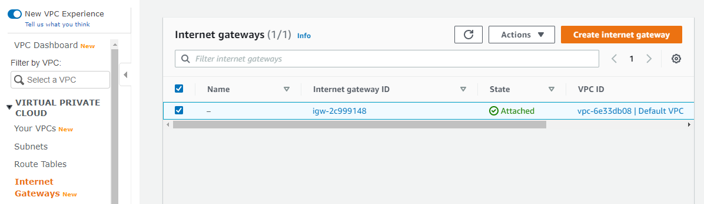
2) Optional Tag Internet Gateway with a name 3) Click Create Internet gateway
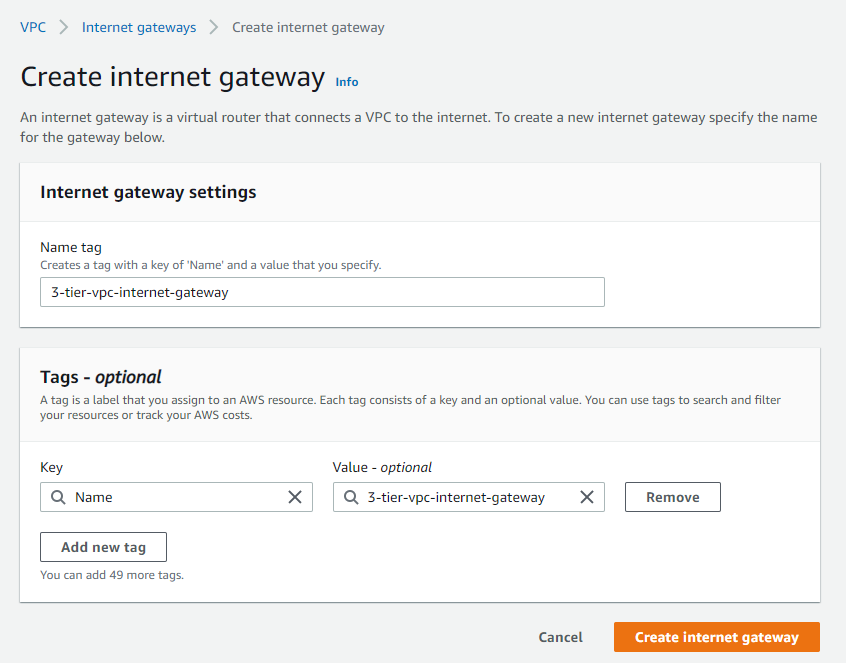
4) Right-click the created Internet gateway and click on Attach to VPC
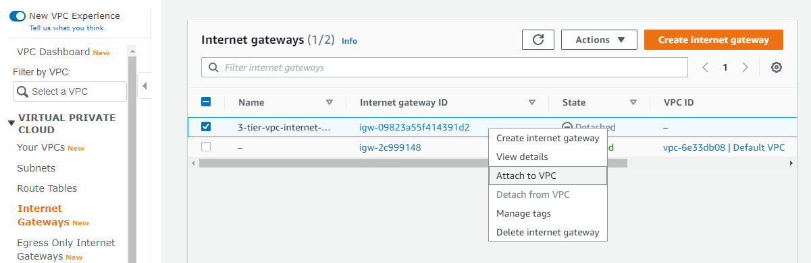
5) Select Available VPC to attach to 3-tier-vpc
6) Click on Attach Internet Gateway
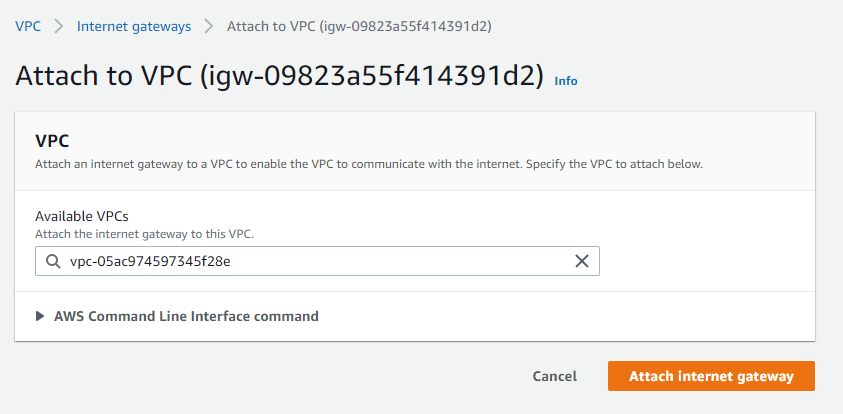
NAT gateway
Pre requisite: After route to internet has been configured for public subnet
NAT gateway enable instances in a private subnet to connect to the internet or other AWS service, but prevent the internet from initiating a connection with those instances
1) In VPC service page, navigate to NAT Gateways page and click on Create NAT gateway
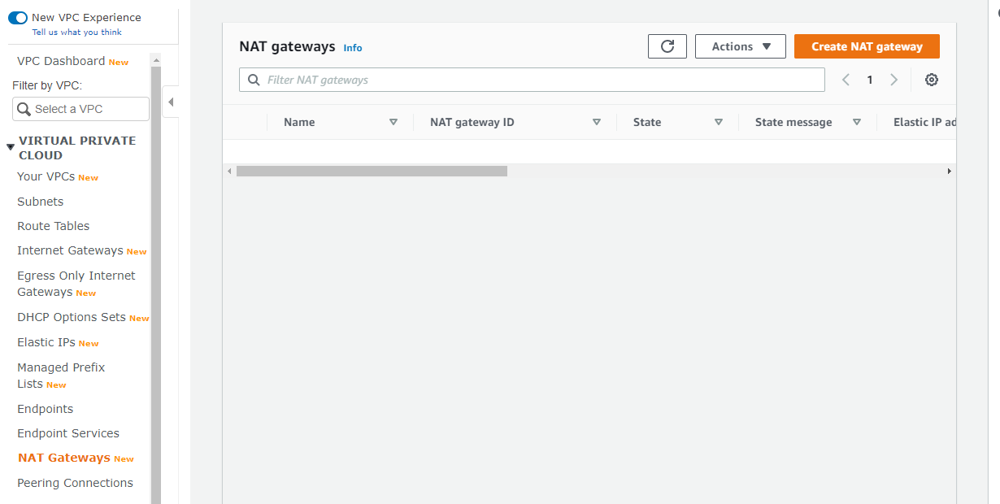
2) Optional Tag NAT Gateway with a name
3) Select subnet: public-subnet-2. Selection can be either of the Public subnets
4) Select an existing Elastic IP or click on allocate Elastic IP
5) Click Create NAT gateway
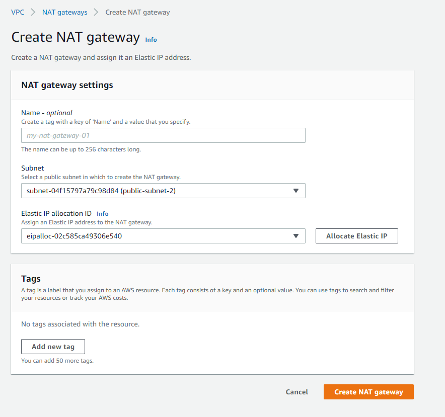
Route Table Configuration
Using routing tables assign to subnets, allow public and private subnets to have internet access through the VPC's Internet gateway and the NAT gateway in the public subnet
| Name Tag | Route Configuration |
|---|---|
| 3-tier-pub-rt | Route public subnets to access internet via Internet Gateway |
| 3-tier-priv-rt | Route private subnets to access internet via NAT Gateway |
1) In VPC service page, navigate to Route Tables page and click on Create route table
- A main Default Route table is created for every VPC. All subnet without assigned route tables will be assigned to the main default route table.
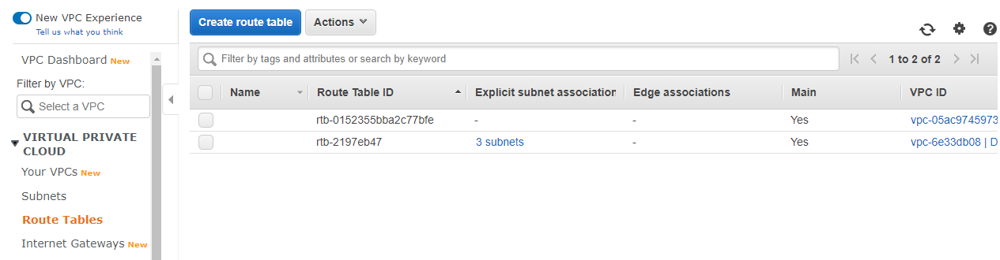
2) Optional Tag route table with a name: 3-tier-pub-rt\ 3) Select VPC: <3-tier-vpc>
4) Click on Create
5) Create route table for public subnet
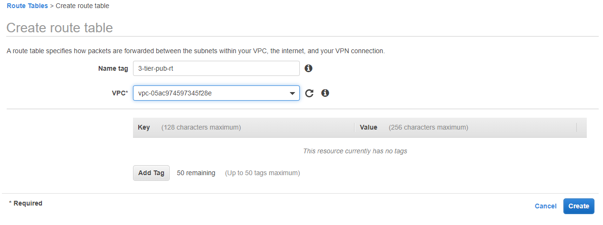
Route Creation
6) Right-click on 3-tier-pub-rt, Click Edit routes
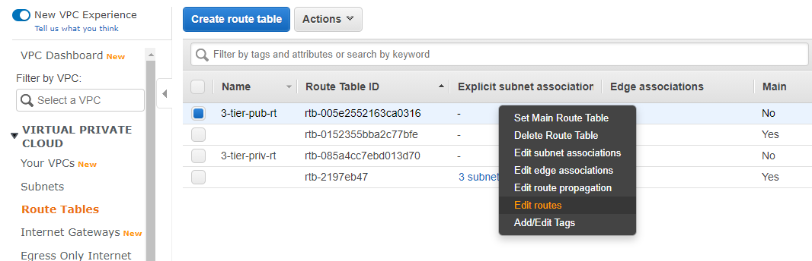
7) Click Add route
8) Set Destination to 0.0.0.0/0, Target: Internet Gateway\ 9) Click Save routes
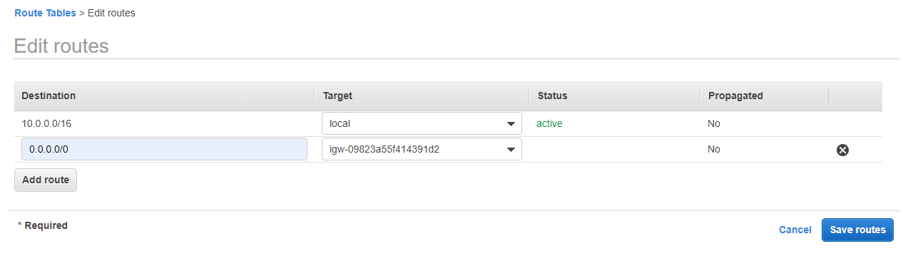
10) Right click on 3-tier-pub-rt, select Edit subnet associations
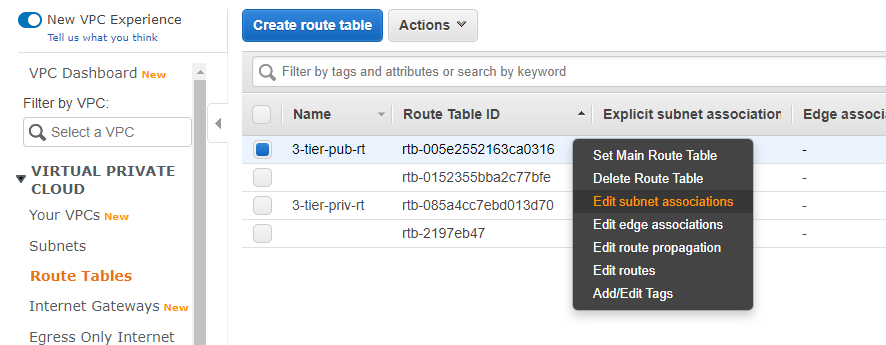
11) Select both the public subnets 12) Click Save
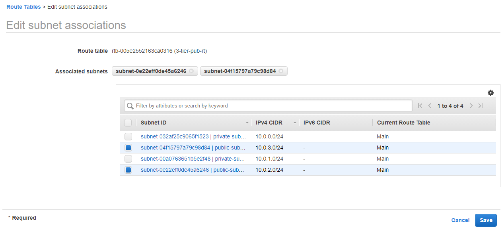
Pre requisite: After NAT Gateway has been configured for public subnet
13) Edit route for 3-tier-priv-rt
14) Click Add route
15) Set Destination to 0.0.0.0/0, Target: NAT Gateway
16) Click Save routes
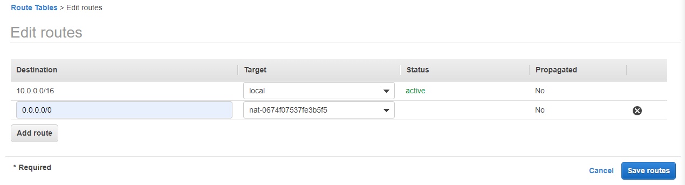
17) Associate Route Table: 3-tier-priv-rt to both private subnets
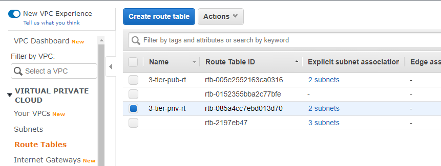